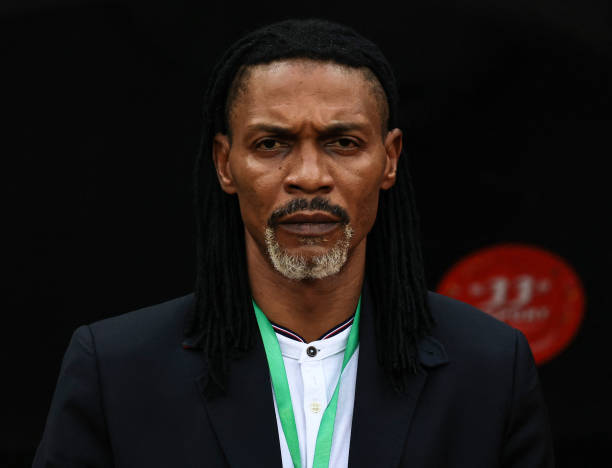

Técnico
Esteve presente nas Copas de 1998, 2002 e 2010, além de 8 edições da Copa das Nações Africanas, onde foi campeão em 2000 e 2002, e de 2 participações na Copa das Confederações (2001 e 2003). Ao entrar em campo na partida contra a Holanda,[8] no lugar de Nicolas N'Koulou, tornou-se o primeiro africano a disputar 4 Copas - recorde igualado pelo compatriota Samuel Eto'o em 2014. Este foi, ainda, o último jogo do zagueiro pela Seleção. Song disse adeus à equipe em agosto, como recordista de partidas disputadas: 137, tendo marcado apenas 5 gols.
Premiações
O maior título do futebol camaronês é a medalha de ouro obtida nos Jogos Olímpicos de Verão de 2000. Na Copa do Mundo FIFA, seu melhor resultado foi o 7º lugar em 1990, quando surpreendeu e encantou a todos com seu futebol, principalmente o seu maior craque, Roger Milla, que aos 38 anos de idade, ainda roubava a cena. Já em relação a Campeonato Africano das Nações, eles têm 5 títulos, sendo o último em 2017. No Futebol Feminino, ganhou a medalha de ouro nos Jogos Pan-Africanos de 2011.
Ainda destacou-se em campeonatos tais como os Jogos Centro-Africanos, a Copa das Nações Afro-Asiáticas, a Copa CEMAC e o Campeonato Africano de Futebol Sub-17.